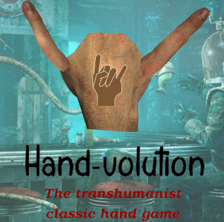
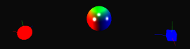

Game jams, prototypes... All my other "toy projects".
Made with Unity 5 at Game Dev Party 8 (Lyon, France, 2015)
With Emmanuel Body-Hinrichsen and Arnaud Jomard.
This mini-game programmed in 2 days was an evolution of the classic "rock paper scissor" game.
Genetic mutations enable the player to grow more than 5 fingers, creating monstruous hands and enabling never-seen-before combinations !
It was a great way to iterate on a well-known classic game design to evolve it into something new.
The code of the game is open source and available on Emmanuel's Github.

ofxShadersFX is a plugin for the C++ creative coding platform openFrameworks.
The aim of this plugin is to facilitate the use of well-known shaders in a handy, ready-made package users can just download and start using.
It emerged from the realization that at the time, all openFrameworks built-in lighting facilities failed using GL core profile, because they relied on the legacy OpenGL fixed-function lighting system. So, people had to recreate their own lighting systems from scratch.
I programmed in modern GLSL (3.+) some well-known shaders for :
Phong and Blinn-Phong lighting (both in Gouraud and Phong shading modes)
Displacement mapping
Alpha blending
Color key mapping.
It was a great introduction to the world of shaders.
